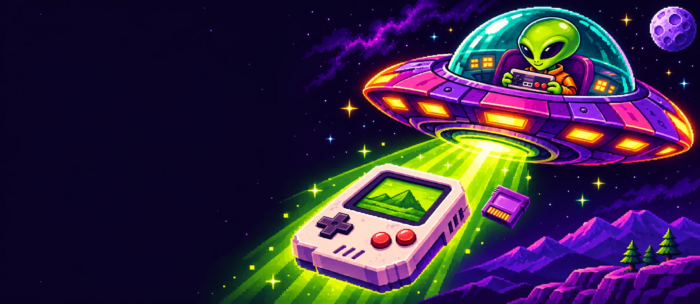
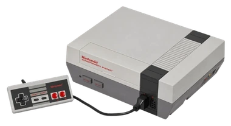
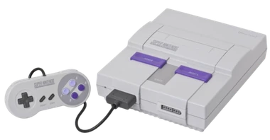
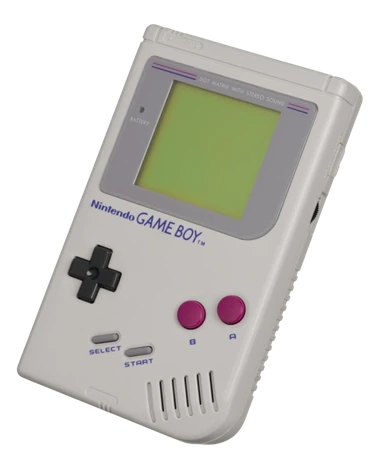
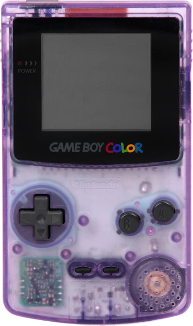
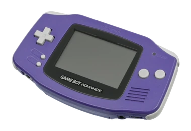
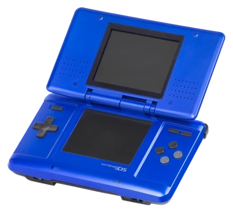
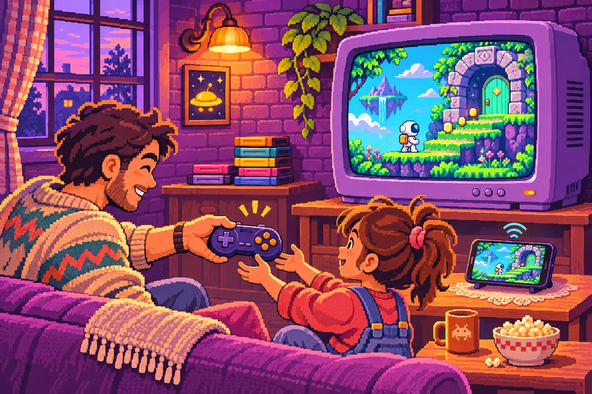
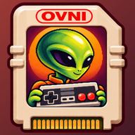

Émulateur rétro pour Android
Passe-moila manette !
Retrouve tes jeux d’enfance. Cette fois, c’est peut-être ton enfant qui te montrera le passage secret.
- 6 consoles
- Sans publicité
- Hors connexion
- Manette Bluetooth
Choisis ta console.
Ouvre une fiche pour retrouver ses boutons
et ses formats de jeu.

SalonNES
Un couloir, trois plateformes et un saut au pixel près. Il reste une vie. À qui de jouer ?
- Fichiers de jeu
.nes- Commandes
- Croix directionnelle, A, B, Start et Select.

SalonSuper NES
Le canapé du mercredi, les grandes cartes à explorer et cette combinaison de boutons que tes doigts connaissent encore.
- Fichiers de jeu
.sfc.smc- Commandes
- Croix directionnelle, A, B, X, Y, L, R, Start et Select.

PortableGame Boy
Un écran vert, deux boutons et un monde entier dans la poche. Qui se rappelle encore le chemin du premier niveau ?
- Fichiers de jeu
.gb- Commandes
- Croix directionnelle, A, B, Start et Select.

PortableGame Boy Color
La couleur change tout. Cette forêt que tu traversais sur un petit écran se remplit soudain de nuances.
- Fichiers de jeu
.gbc- Commandes
- Croix directionnelle, A, B, Start et Select.

PortableGame Boy Advance
Une console à tenir en largeur, deux gâchettes sous les index et un décor qui défile jusqu’au fond du train.
- Fichiers de jeu
.gba- Commandes
- Croix directionnelle, A, B, L, R, Start et Select.

PortableNintendo DS
Un indice en haut, une action en bas. Retrouve les jeux qui te faisaient jongler entre deux écrans.
- Fichiers de jeu
.nds- Commandes
- Deux écrans, zone tactile, croix directionnelle, A, B, X, Y, L, R, Start et Select.

À chacun son tour.
La règle du soir ? Une vie chacun. Celui qui a repéré la porte cachée a le droit de crier « Là, sur ta gauche ! ».
Associe ta manette Bluetooth au téléphone, active le mode TV dans Game OverTime, puis duplique l’écran sur un téléviseur compatible. Sur un Samsung compatible, utilise Smart View.
Voir la fiche TV
La télé est prise ? Ta collection tient dans ta poche. Même dans le train, tu peux tenter ce fameux saut.
Dans Thèmes, déplace la croix et les boutons à portée de tes pouces, puis ajuste leur taille. Enregistre une disposition par console et retouche-la en partie depuis Pause.
Voir les commandes à l’écran
Dans l’appli.
De la boîte à cartouches
à la prochaine sauvegarde.
Retrouve tes jeux
Touche « Rechercher mes jeux » ou choisis un dossier. Game OverTime classe tes fichiers par console et regroupe les copies identiques. Quelques lettres suffisent pour retrouver un titre.
Agrandir la fiche illustrée
Choisis ta jaquette
Le nom t’échappe, mais tu reconnaîtrais la boîte entre mille. Ouvre Jaquettes, agrandis l’aperçu et choisis ton édition. L’image reste sur ton téléphone.
Agrandir la fiche illustrée
Reprends ta partie
Tu t’arrêtes devant le château ? Sauvegarde avant de quitter. Depuis l’accueil, retrouve ton dernier jeu et laisse à quelqu’un d’autre le plaisir d’ouvrir la grande porte.
Agrandir la fiche illustrée

On reprend demain ?
Tu participes au test Android ? Retrouve Game OverTime sur Google Play avec le compte inscrit au test.